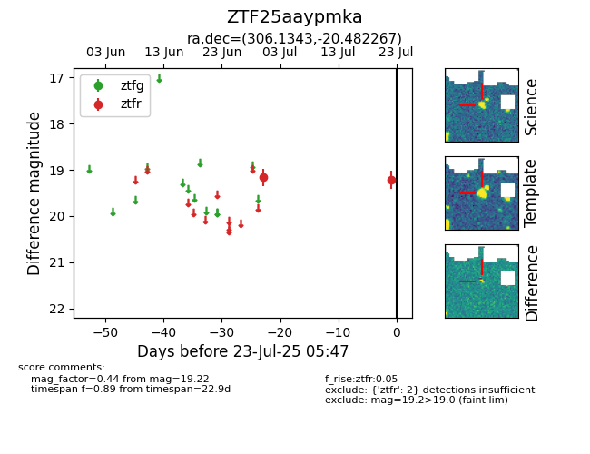

Target ZTF25aaypmka at 2025-07-23 12:37, see:
FINK: fink-portal.org/ZTF25aaypmka
Lasair: lasair-ztf.lsst.ac.uk/objects/ZTF25aaypmka
ALeRCE: alerce.online/object/ZTF25aaypmka
alt names
ZTF25aaypmka (ztf,fink)
coordinates:
equatorial (ra, dec) = (306.1343,-20.48227)
galactic (l, b) = (23.5207,-29.27460)
photometry
last ztfr=19.22
2 ztfr detections
